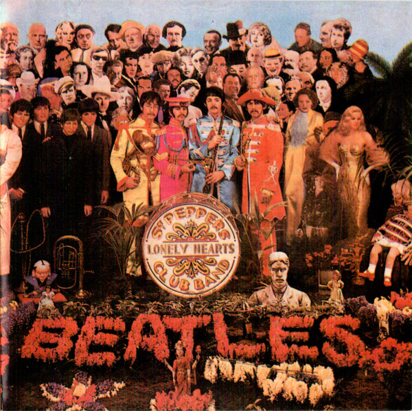

search
paginas
home
trending_up
biblioteca
history
playlist_play
group
usuario
settings
monetization_on
star
logout
#1 mais ouvida
nome da musica
nome da banda
01

Nome da musica
Artista
01
nome do artista
nome do artista